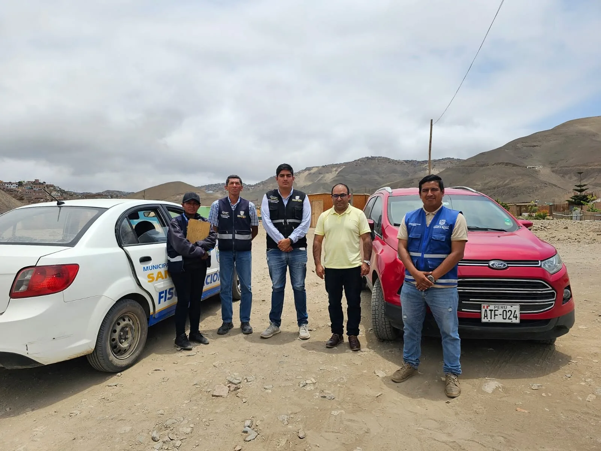

Nosotros
Nuestra Historia
Una historia de organización y crecimiento construida por los asociados desde 2014.
Quiénes Somos
Los orígenes · 2014
El inicio de una comunidad organizada
La historia de la Asociación de Vivienda Virgen de Loreto, Santa Rosa–Piedras Gordas comenzó en 2014, a partir de la venta de terrenos realizada por el Fondo de Vivienda a 1,172 trabajadores de la Fuerza Aérea del Perú. Entre ellos había oficiales, técnicos, suboficiales y empleados civiles de la institución.
Ese mismo año se realizó un sorteo mediante el cual se asignaron 1,172 lotes. El resultado dio inicio a una nueva etapa para los beneficiarios, quienes se reunieron con el propósito de organizarse y contar con una representación común.
Como fruto de esa organización, constituyeron la Asociación de Vivienda Virgen de Loreto y conformaron su primer Consejo Directivo y Consejo de Vigilancia. También elaboraron y aprobaron el estatuto que estableció las bases para la vida institucional de la asociación y que, según la información proporcionada, continúa vigente hasta hoy.
Antes y ahora
El paisaje de AVILORETO ha cambiado con el crecimiento de la comunidad y el desarrollo de sus espacios.
Una historia de continuidad
A lo largo de los años, distintos consejos directivos han asumido la conducción de la asociación. Cada etapa ha dado continuidad al trabajo colectivo iniciado por sus fundadores y a la representación de los propietarios que integran la comunidad.
La organización y la participación de los asociados han permitido sostener la vida institucional y sentar las bases para impulsar nuevas iniciativas orientadas al desarrollo de AVILORETO.
Una nueva etapa · Desde 2023
A partir de 2023 comenzaron a tomar impulso proyectos sustanciales para el desarrollo de la asociación. Entre ellos se encuentran la electrificación definitiva, las gestiones para los servicios de agua y desagüe, y la construcción del Centro Recreacional.
Estas iniciativas abren una nueva etapa en la historia de AVILORETO: proyectos de infraestructura y servicios que buscan beneficiar a los asociados y fortalecer el bienestar de la comunidad.
El presente y el futuro
Un proceso de ampliación para la comunidad
Hoy, la asociación se encuentra en proceso de ampliación de la habilitación urbana. La etapa contempla pasar de los 1,172 lotes adjudicados originalmente a un proceso que comprende a 1,600 copropietarios; se trata de los mismos propietarios que conforman AVILORETO.
Así, la historia iniciada en 2014 continúa desarrollándose. Desde la organización de sus primeros beneficiarios hasta los proyectos y la ampliación actuales, AVILORETO sigue trabajando para acompañar el crecimiento de su comunidad y contribuir al bienestar de sus asociados y sus familias.
Conoce más